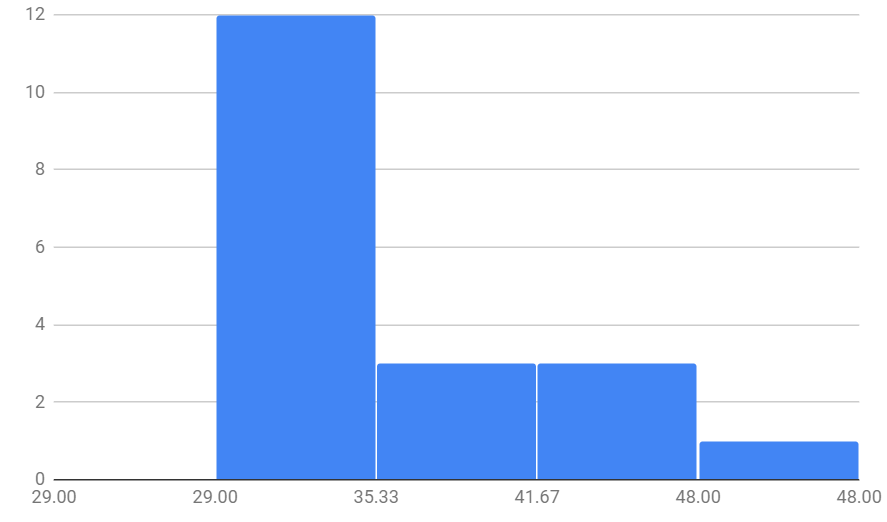
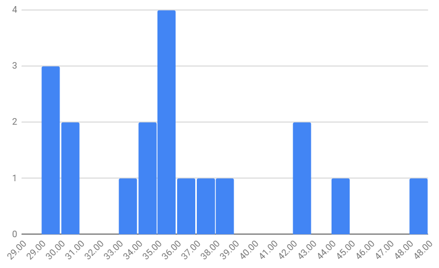
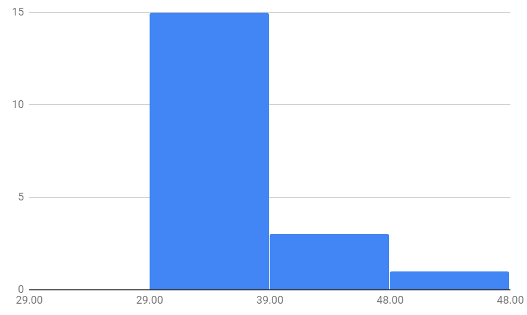

This is a histogram of the homework grades of the Farmer Penguin, created using Google Sheets. I entered the grades in a
column on the sheet, highlighted them, and created a histogram with the create chart option.
This is the histogram created with "auto" bucketing: 
I then adjusted the bucket size - the
size of the groupings on the x-axis. I first chose 1, resulting in this graph: 
This histogram does not accurately portray the patterns of the homework grades. It is hard to tell that
If the bucket size is 10, the histogram looks like this: 
This histogram misrepresents the data because it lacks specificity - it is hard for a viewer to extract truth about the penguin's
grades from this visualization.
A bucket size of 5 portrays the data well. It best shows in general the penguin's most common grades. It is
clear from the histogram that the penguin commonly gets between a 34 and 39 on homework assignments.